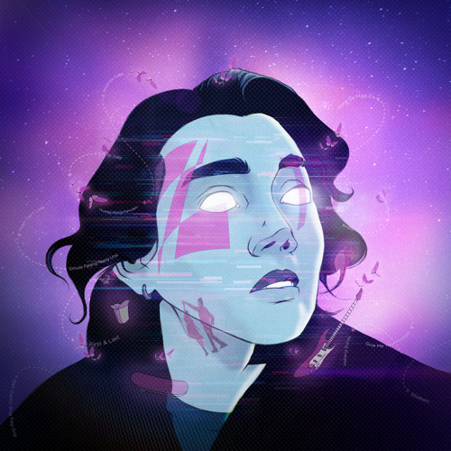

PRIVATE FREQUENCY
Semua Aku Dirayakan

♫
Nadin Amizah
00:00
- Tiada yang bilang
- Badainya 'kan reda
- Berhadapan dengan cahaya yang kerap membutakan hu
- Tiada yang bilang
- Jawaban 'kan datang
- Jauh dari seram yang selama ini telah kubayangkan
- Semua aku dirayakan
Archive Directory
Alam Semesta & Teknologi Penjelajahan
Special Guest: Kisah Interstellar & Makna Cinta
▾
Sinopsis & Perjalanan Kosmik
Interstellar menceritakan kisah Cooper, seorang mantan pilot NASA yang harus meninggalkan bumi dan anak perempuannya, Murph, demi menjalani misi penjelajahan menembus lubang cacing (wormhole) untuk mencari rumah baru bagi umat manusia di galaksi lain.
Filosofi Utama: Cinta Melintasi Dimensi
Di balik teori fisika kuantum, relativitas waktu, dan lubang hitam (Gargantua), film ini menyampaikan pesan paling emosional: bahwa cinta adalah satu-satunya hal yang mampu melampaui batasan ruang dan waktu. Sejauh apa pun jarak memisahkan, ikatan hati yang tulus tidak akan pernah hilang.